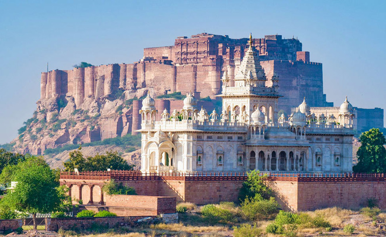
.
The desert city of Jodhpur is dominated by the huge Meherangarh Fort (above in the background behind the Jaswant Thada Cenotaph). Described as the 'Blue City' it really is blue, painted as if to reflect the colour of a hot sky. As well as glowing with a mysterious light, the colour is thought to repel insects.
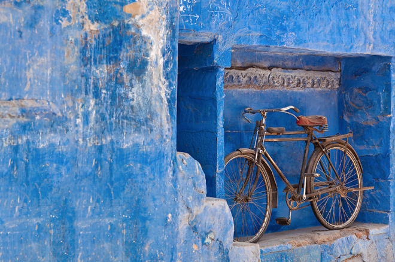
Jodhpur was founded by Rao Jodha and is on the vital trade route between Delhi and Gujarat. It grew out of the profits of opium, sandalwood, dates and copper and the area was once cheerily known as Marwar (the 'Land of Death') due to its harsh topography and climate. Jodhpur is a very hectic place cluttered with traffic but, to be honest, feels poorer and less developed than the cities of the east.
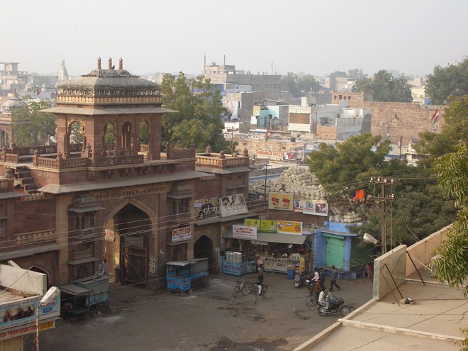
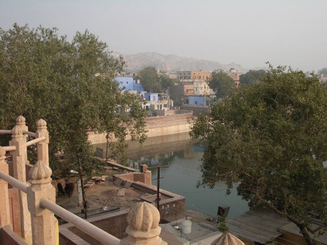
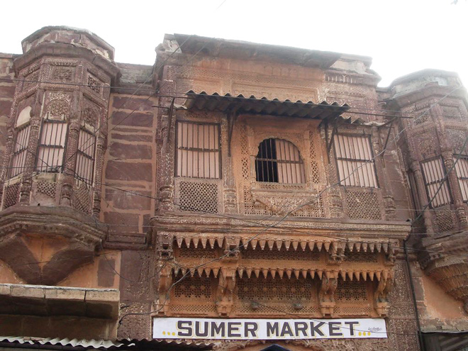
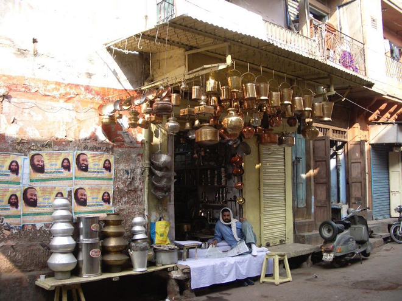
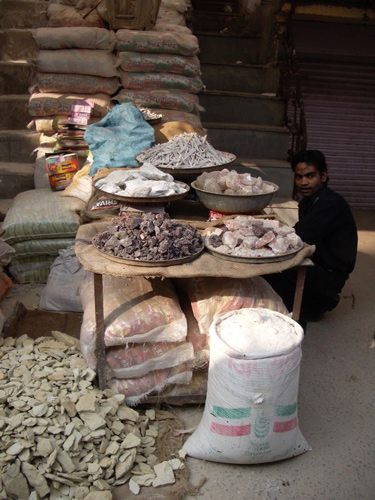
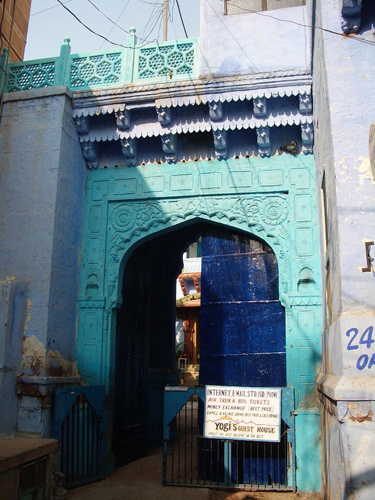
The Clock Tower is an old city landmark, surrounded by the vibrant Sardar Market.
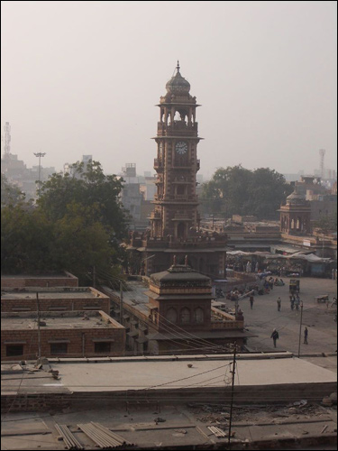
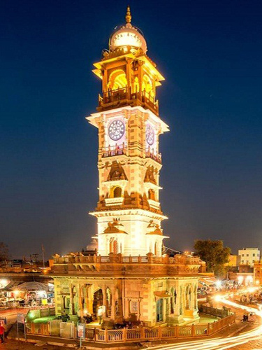
At our accommodation - Pal Haveli, which was built around a courtyard by the Thakur of Pal in 1847 - it was time to say goodbye to our driver, Anit, who had driven us faithfully from Delhi all the way to Jodhpur.
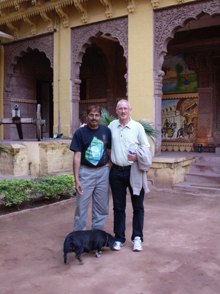
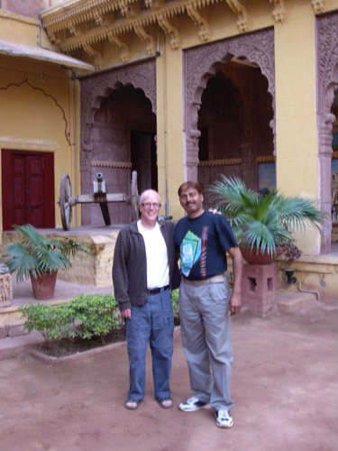
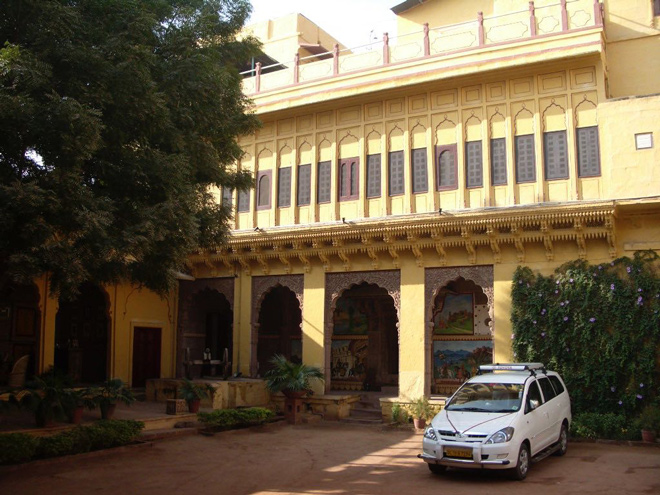
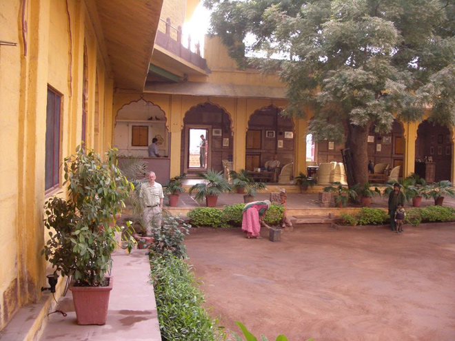
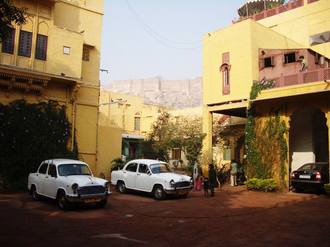
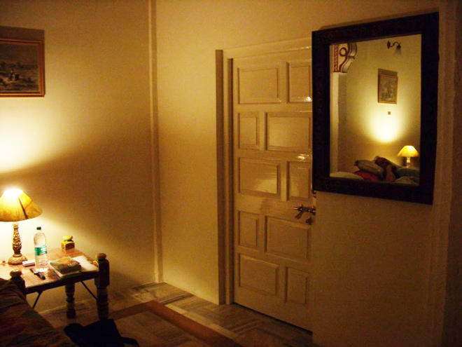
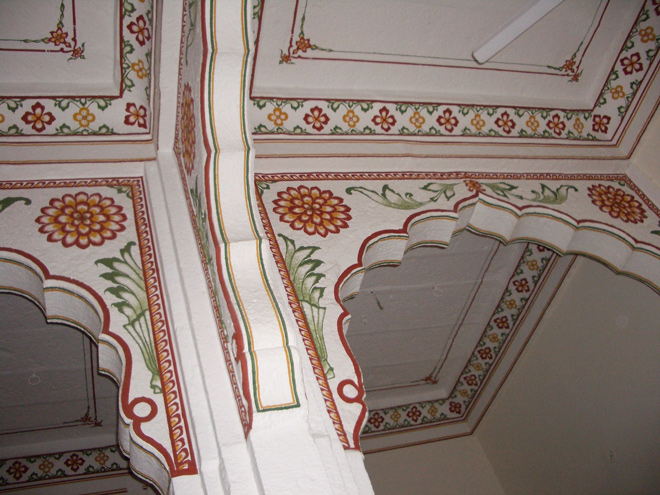
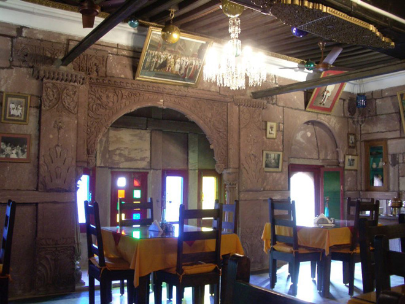
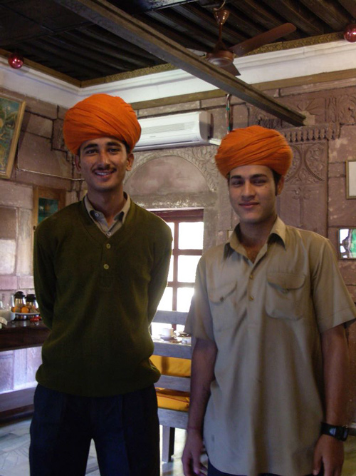
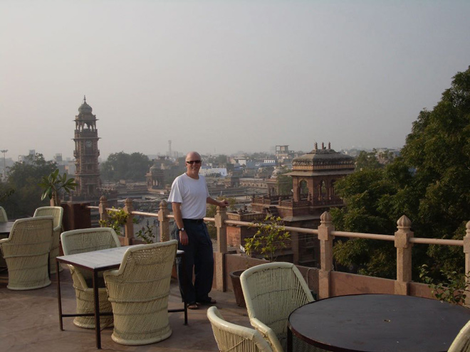
The view from the roof terrace was spectacular, overlooking the Clock Tower in one direction and the Meherangarh Fort the other, which we saw as the sun set and the moon and stars came out.
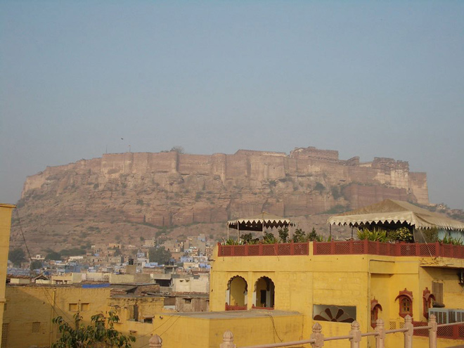
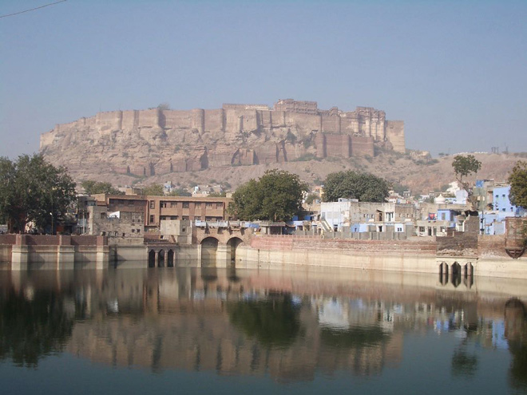
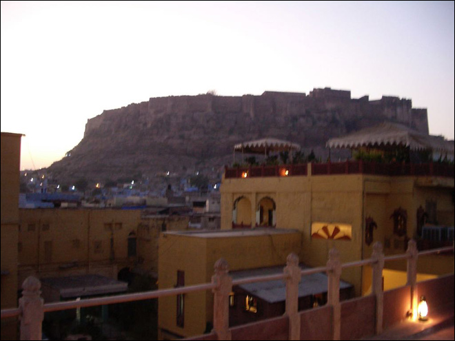
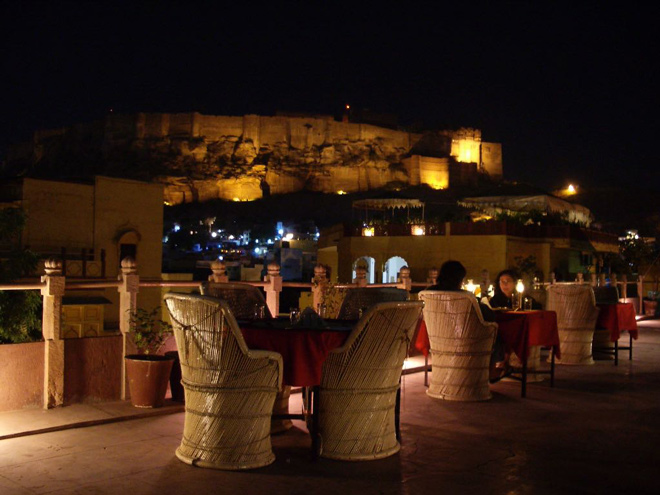